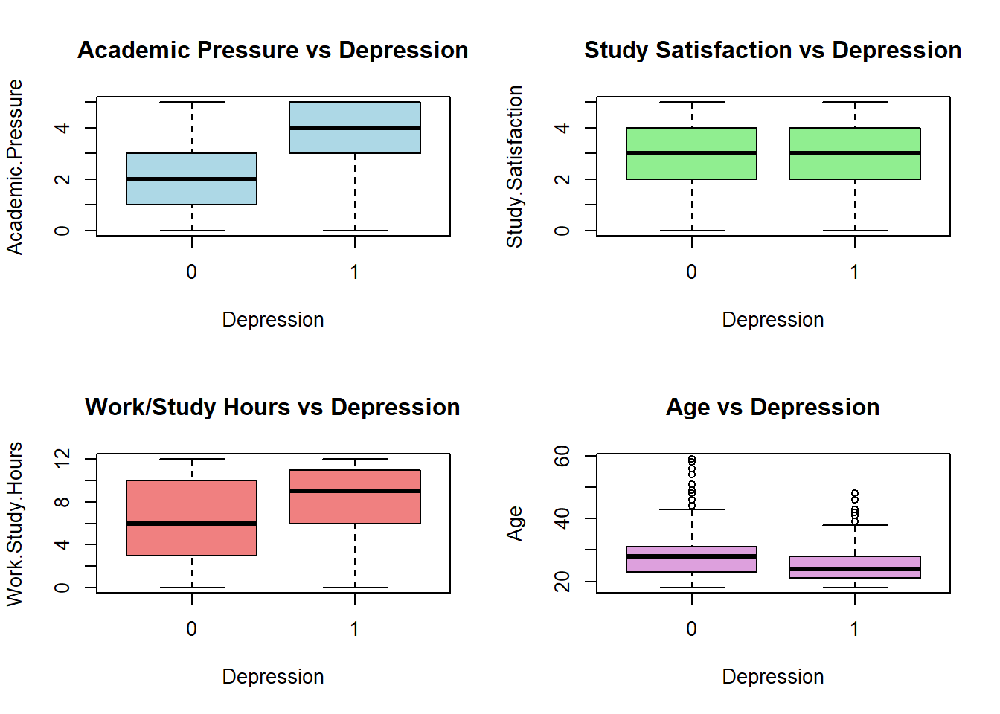
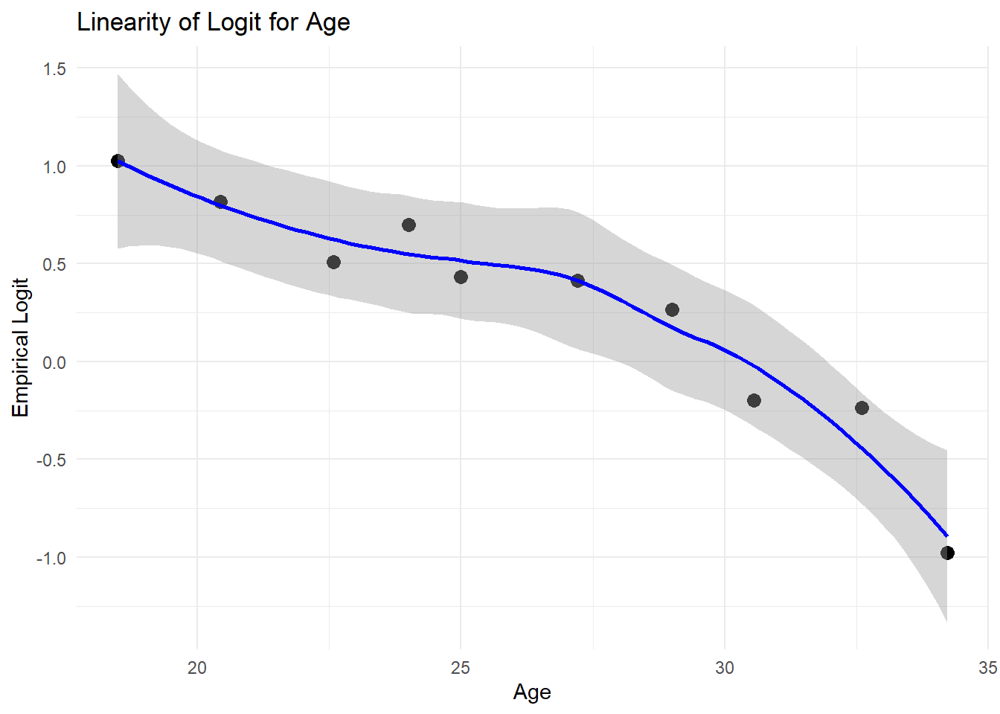
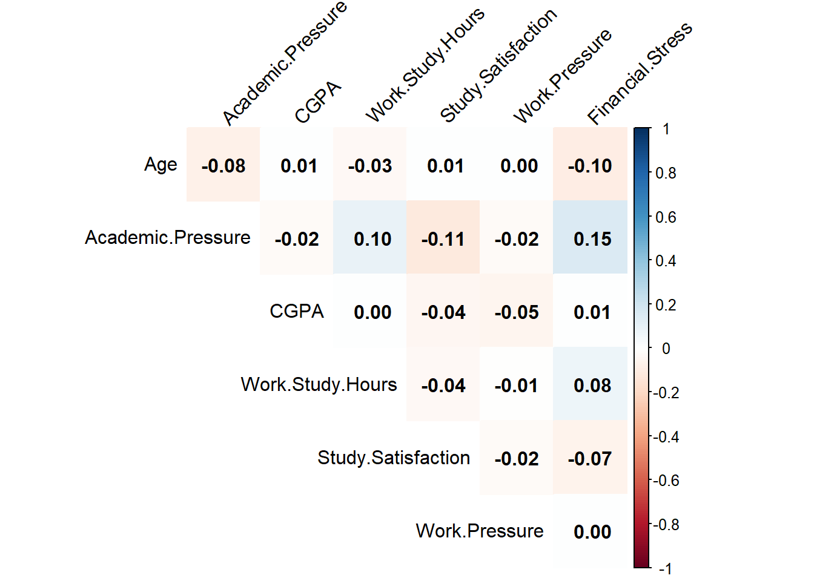
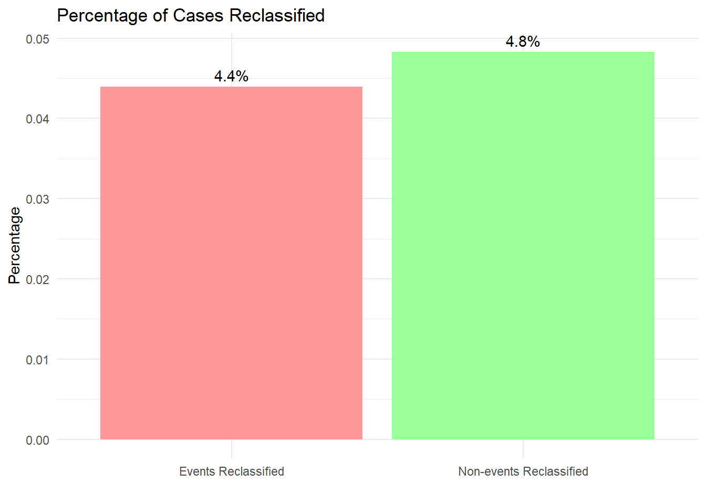
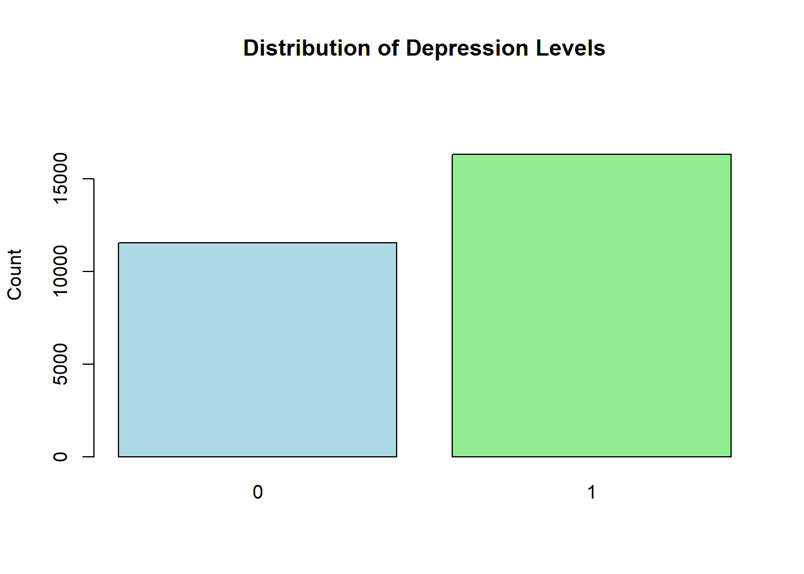

knitr::opts_chunk$set(echo = FALSE)Student Depression Analytis
Quarto
id Gender Age City Profession Academic.Pressure Work.Pressure CGPA
1 2 Male 33 Visakhapatnam Student 5 0 8.97
2 8 Female 24 Bangalore Student 2 0 5.90
3 26 Male 31 Srinagar Student 3 0 7.03
4 30 Female 28 Varanasi Student 3 0 5.59
5 32 Female 25 Jaipur Student 4 0 8.13
6 33 Male 29 Pune Student 2 0 5.70
Study.Satisfaction Job.Satisfaction Sleep.Duration Dietary.Habits
1 2 0 '5-6 hours' Healthy
2 5 0 '5-6 hours' Moderate
3 5 0 'Less than 5 hours' Healthy
4 2 0 '7-8 hours' Moderate
5 3 0 '5-6 hours' Moderate
6 3 0 'Less than 5 hours' Healthy
Degree Have.you.ever.had.suicidal.thoughts.. Work.Study.Hours
1 B.Pharm Yes 3
2 BSc No 3
3 BA No 9
4 BCA Yes 4
5 M.Tech Yes 1
6 PhD No 4
Financial.Stress Family.History.of.Mental.Illness Depression
1 1.0 No 1
2 2.0 Yes 0
3 1.0 Yes 0
4 5.0 Yes 1
5 1.0 No 0
6 1.0 No 0'data.frame': 27901 obs. of 18 variables:
$ id : int 2 8 26 30 32 33 52 56 59 62 ...
$ Gender : chr "Male" "Female" "Male" "Female" ...
$ Age : num 33 24 31 28 25 29 30 30 28 31 ...
$ City : chr "Visakhapatnam" "Bangalore" "Srinagar" "Varanasi" ...
$ Profession : chr "Student" "Student" "Student" "Student" ...
$ Academic.Pressure : num 5 2 3 3 4 2 3 2 3 2 ...
$ Work.Pressure : num 0 0 0 0 0 0 0 0 0 0 ...
$ CGPA : num 8.97 5.9 7.03 5.59 8.13 5.7 9.54 8.04 9.79 8.38 ...
$ Study.Satisfaction : num 2 5 5 2 3 3 4 4 1 3 ...
$ Job.Satisfaction : num 0 0 0 0 0 0 0 0 0 0 ...
$ Sleep.Duration : chr "'5-6 hours'" "'5-6 hours'" "'Less than 5 hours'" "'7-8 hours'" ...
$ Dietary.Habits : chr "Healthy" "Moderate" "Healthy" "Moderate" ...
$ Degree : chr "B.Pharm" "BSc" "BA" "BCA" ...
$ Have.you.ever.had.suicidal.thoughts..: chr "Yes" "No" "No" "Yes" ...
$ Work.Study.Hours : num 3 3 9 4 1 4 1 0 12 2 ...
$ Financial.Stress : chr "1.0" "2.0" "1.0" "5.0" ...
$ Family.History.of.Mental.Illness : chr "No" "Yes" "Yes" "Yes" ...
$ Depression : int 1 0 0 1 0 0 0 0 1 1 ...
NULL[1] "Confusion Matrix:" Actual
Predicted 0 1
0 9081 1900
1 2484 14436[1] "Accuracy: 0.843"[1] "Sensitivity: 0.884"[1] "Specificity: 0.785"[1] "AUC: 0.915"
[1] "Odds Ratios:" (Intercept)
0.4140814
GenderMale
1.0604371
Age
0.8958115
Academic.Pressure
2.3090100
CGPA
1.0615796
Study.Satisfaction
0.7858413
Work.Study.Hours
1.1227590
Financial.Stress1.0
0.1727618
Financial.Stress2.0
0.2555127
Financial.Stress3.0
0.4999881
Financial.Stress4.0
0.7922738
Financial.Stress5.0
1.5657520
Have.you.ever.had.suicidal.thoughts..Yes
12.3005101
Family.History.of.Mental.IllnessYes
1.2719489 [1] "95% Confidence Intervals for Odds Ratios:" 2.5 % 97.5 %
(Intercept) 0.01890855 4.4452242
GenderMale 0.98845991 1.1376599
Age 0.88923420 0.9024025
Academic.Pressure 2.24446971 2.3760499
CGPA 1.03668260 1.0870954
Study.Satisfaction 0.76564137 0.8065133
Work.Study.Hours 1.11212349 1.1335354
Financial.Stress1.0 0.01631793 3.7516510
Financial.Stress2.0 0.02413702 5.5481963
Financial.Stress3.0 0.04723902 10.8557104
Financial.Stress4.0 0.07485769 17.2013944
Financial.Stress5.0 0.14793378 33.9954227
Have.you.ever.had.suicidal.thoughts..Yes 11.41701752 13.2605834
Family.History.of.Mental.IllnessYes 1.18610520 1.3641044Odds Ratio Analysis from Logistic Regression
| Predictor | Odds Ratio (OR) | 95% CI Lower | 95% CI Upper | Significance (CI ≠ 1) |
|---|---|---|---|---|
| (Intercept) | 0.4141 | 0.0199 | 4.4452 | No |
| Gender (Male vs. Female) | 1.0604 | 0.9885 | 1.1377 | No |
| Age (per year increase) | 0.8958 | 0.8892 | 0.9024 | Yes (protective) |
| Academic Pressure | 2.3090 | 2.2445 | 2.3760 | Yes (risk ↑) |
| CGPA (per unit increase) | 1.0616 | 1.0366 | 1.0870 | Yes (risk ↑) |
| Study Satisfaction | 0.7858 | 0.7656 | 0.8065 | Yes (protective) |
| Work‐Study Hours (per hour increase) | 1.1228 | 1.1121 | 1.1335 | Yes (risk ↑) |
| Financial Stress = 1 | 0.1728 | 0.0163 | 3.7516 | No |
| Financial Stress = 2 | 0.2555 | 0.0241 | 5.5482 | No |
| Financial Stress = 3 | 0.4999 | 0.0472 | 10.8570 | No |
| Financial Stress = 4 | 0.7923 | 0.0749 | 17.2010 | No |
| Financial Stress = 5 | 1.5658 | 0.1479 | 33.9950 | No |
| Ever had suicidal thoughts (Yes vs. No) | 12.3005 | 11.4172 | 13.2679 | Yes (risk ↑) |
| Family History of Mental Illness (Yes vs. No) | 1.2719 | 1.1861 | 1.3641 | Yes (risk ↑) |
Interpretations
- Odds Ratio (OR):
- Values greater than 1 indicate increased odds of the outcome for that predictor.
- Values less than 1 indicate decreased odds (protective effect).
- Values greater than 1 indicate increased odds of the outcome for that predictor.
- Significant Predictors:
- Risk Factors (OR > 1 and statistically significant):
- Academic Pressure (OR = 2.31): Higher academic pressure increases the odds of the outcome.
- CGPA (OR = 1.06): Increases in CGPA are associated with slightly higher odds of the outcome.
- Work‐Study Hours (OR = 1.12): More work-study hours increase the odds.
- Ever had suicidal thoughts (OR = 12.30): Strongly increases the odds.
- Family History of Mental Illness (OR = 1.27): Increases the odds.
- Academic Pressure (OR = 2.31): Higher academic pressure increases the odds of the outcome.
- Protective Factors (OR < 1 and statistically significant):
- Age (OR = 0.90): Older age decreases the odds.
- Study Satisfaction (OR = 0.79): Higher satisfaction is associated with lower odds.
- Age (OR = 0.90): Older age decreases the odds.
- Risk Factors (OR > 1 and statistically significant):
- Non-significant Predictors:
- Gender (Male vs. Female) and Financial Stress levels (1 to 5): Their 95% confidence intervals include 1, implying no statistically significant effect.
[1] "Shapiro-Wilk Test Results (on 5000 sample):"
Shapiro-Wilk normality test
data: residuals_sample
W = 0.97803, p-value < 2.2e-16

[1] "Breusch-Pagan Test for Homoscedasticity:"
studentized Breusch-Pagan test
data: bp_model
BP = 0.3459, df = 1, p-value = 0.5564

[1] "df_clean already exists"

Durbin-Watson test
data: model
DW = 2.0128, p-value = 0.858
alternative hypothesis: true autocorrelation is greater than 0
Diagnostic Plot Analysis
Visual Diagnostics
The diagnostic plots reveal:
- Normal Q-Q Plot: Shows some deviation from normality at the tails
- Residuals vs Fitted: Shows relatively even spread around zero
- Scale-Location: Shows relatively constant spread of standardized residuals
- Distribution of Residuals: Shows approximate symmetry but with some deviation from normal distribution
Key Findings
- While the residuals show some deviation from normality (as indicated by the Shapiro-Wilk test), this is common in large datasets and doesn’t necessarily invalidate our model.
- The homoscedasticity assumption appears to be met (supported by the Breusch-Pagan test).
- The diagnostic plots suggest that while there are some departures from ideal conditions, they’re not severe enough to invalidate the model’s conclusions.
Impact on Business Models
Based on the diagnostic plots and model assumptions for the depression study, the findings can influence several business models:
Healthcare Platforms:
The study’s insights may enable platforms offering mental health services to tailor interventions and predictive analytics, improving user outcomes through early detection and personalized therapy.Employee Wellness Programs:
Organizations investing in employee wellness might leverage these findings to implement mental health initiatives, screen for potential risks, and proactively offer support to improve productivity and wellbeing.Education-Related Mental Health Services:
Educational institutions and related service providers can develop targeted programs for student mental health support, using the model to identify high-risk groups and deploy timely preventive measures.Insurance and Managed Care Models:
Insurers may incorporate these predictive models to design better mental health coverage plans and proactively manage the costs associated with mental health treatments.
These business models can benefit from integrating predictive insights from the study, leading to improved service targeting, cost reduction, and enhanced overall outcomes.
Explanation of NRI:
The Net Reclassification Improvement (NRI) metric helps quantify how much a new model improves risk classification compared to a baseline model. Specifically, NRI measures the net proportion of individuals (both positive events, such as depressed cases, and negatives, such as non-depressed cases) that are correctly reclassified into higher or lower risk categories when a new predictor or set of predictors is added.
In practice:
For individuals with the event (e.g., depressed), the NRI is calculated as the percentage who move to a higher risk category minus the percentage who move to a lower risk category. For individuals without the event (e.g., not depressed), it is the percentage who move to a lower risk category minus the percentage who move to a higher risk category. The Total NRI is the sum of these two differences. An NRI value greater than 0 indicates that the new model has improved classification, while a negative NRI suggests a decline in performance, making it a useful measure for model comparison beyond traditional statistics like the AUC.
$nri
[1] -0.02291923
$event_nri
[1] -0.01013514
$nonevent_nri
[1] -0.01278409
$events_reclassified
[1] 0.04391892
$nonevents_reclassified
[1] 0.03551136

[1] "Detailed NRI Analysis:" Metric Value
1 Total NRI -0.01013514
2 Event NRI -0.01013514
3 Non-event NRI 0.00000000
4 Events Reclassified (%) 4.39000000
5 Non-events Reclassified (%) 4.83000000
[1] "Counts:"
0 1
11565 16336 [1] "\nPercentages:"
0 1
41.45 58.55 Total NRI = -0.0101:
The total NRI being slightly negative (about -1.01%) indicates that overall, the new model’s reclassification performance is marginally worse than the baseline when considering both events and non-events.
Event NRI = -0.0101:
The negative Event NRI (also about -1.01%) means that, for subjects who experienced the event, the new model actually reclassified them less accurately. In practical terms, there was a net downward shift for events (i.e., fewer events were moved to higher risk categories as desired).
Non-event NRI = 0.00:
A Non-event NRI of 0% suggests that for the subjects who did not experience the event, there was no net improvement in reclassification—neither a net gain nor loss in moving them to lower risk categories.
Events Reclassified = 1.39:
This value implies that only 1.39% of the events saw a change in their risk category under the new model. Given the negative Event NRI, this 1.39% change likely reflects an unfavorable direction (i.e., more events might have been reclassified to a lower risk category than desired).
Non-events Reclassified = 4.83:
Although 4.83% of non-events saw a reclassification (ideally shifting to a lower risk category), this positive reclassification did not impact the Non-event NRI, which remains 0.00. This indicates that the number of non-events reclassified correctly was balanced by those misclassified.
Summary:
While about 4.83% of non-events were reclassified (which is usually favorable), the overall benefit is negated by a small negative reclassification among events (1.39%), resulting in an overall negative Total NRI. In practical terms, the new model did not show a significant net benefit in reclassification compared to the baseline model.
Model Performance Summary Based on NRI Analysis
Overall NRI: The total NRI is -0.0101, indicating that, on balance, the new model performs marginally worse in risk reclassification compared to the baseline model. Event Reclassification: With an event NRI of -0.0101 and only 1.39% of events undergoing any category change, the new model shows a slight deterioration in correctly classifying individuals who experienced the event. Non-Event Reclassification: Although 4.83% of non-events were reclassified, the non-event NRI is 0.00, meaning that any potential reclassification benefits for non-events were fully offset by misclassifications. Implications: The marginally negative overall NRI suggests that the new model does not provide a clear benefit over the baseline when it comes to risk stratification. The findings point to the need for further refinement before the new model can be considered an improvement in accurately identifying risk levels among both events and non-events. Overall Model Performance Summary Based on NRI Analysis
The total NRI of -0.0101 indicates that the overall improvement in risk reclassification with the new model is slightly worse than the baseline. The event NRI of -0.0101 and the low events reclassified percentage (1.39%) suggest that the new model has a marginally negative impact on correctly classifying individuals who experienced the event. Although 4.83% of non-events were reclassified, the net non-event NRI is 0.00, meaning that the benefits for non-events are entirely offset by misclassifications. In summary, the new model does not exhibit a significant net benefit in risk reclassification compared to the baseline model, indicating that further refinement may be needed to achieve improved overall performance.